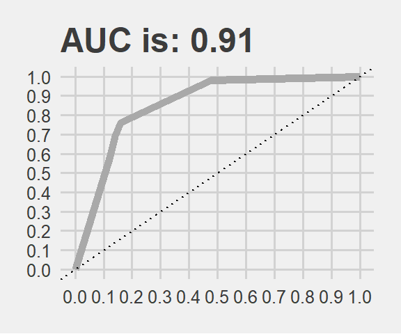

library(data.table)
library(dplyr) #which is better? dplyr or data.table? or a combination of both?
library(stringr) #str_split usefull while tabulating model results
library(tidyr) #gather function usefull when listing model results
#modeling libs
library(caret)
library(rpart)
library(xgboost)
library(randomForest)
library(glmnet)
library(ROCR)
library(gbm)
library(ISLR)
#viz libs
library(ggplot2)
library(ggthemes)
library(rpart.plot)
library(gridExtra)
library(doParallel)
registerDoParallel(cores = 4)The Data of Juice
This dataset records purchases of two types of orange juices and presents customer and product characteristics as features. The goal is to predict which of the juices is chosen in a given purchase situation.
But first let me give you a fact: the orange juice you buy today was likely squeezed last summer. They first kill it and then add the orange flavor before they pack and sell you. Ever wonder why your orange juice tastes the same, in all the seasons? Yes, orange juice is a dirty business. Long story short, don’t buy it.
Obviously most people buy it. That’s why we have a dataset like this. In this study we will call this phenomenal purchasing behaviour as The Kamikaze event.
data(OJ)
data <- data.table(OJ)
glimpse(data)## Observations: 1,070
## Variables: 18
## $ Purchase <fct> CH, CH, CH, MM, CH, CH, CH, CH, CH, CH, CH, CH,...
## $ WeekofPurchase <dbl> 237, 239, 245, 227, 228, 230, 232, 234, 235, 23...
## $ StoreID <dbl> 1, 1, 1, 1, 7, 7, 7, 7, 7, 7, 7, 7, 7, 7, 7, 7,...
## $ PriceCH <dbl> 1.75, 1.75, 1.86, 1.69, 1.69, 1.69, 1.69, 1.75,...
## $ PriceMM <dbl> 1.99, 1.99, 2.09, 1.69, 1.69, 1.99, 1.99, 1.99,...
## $ DiscCH <dbl> 0.00, 0.00, 0.17, 0.00, 0.00, 0.00, 0.00, 0.00,...
## $ DiscMM <dbl> 0.00, 0.30, 0.00, 0.00, 0.00, 0.00, 0.40, 0.40,...
## $ SpecialCH <dbl> 0, 0, 0, 0, 0, 0, 1, 1, 0, 0, 0, 0, 0, 0, 0, 0,...
## $ SpecialMM <dbl> 0, 1, 0, 0, 0, 1, 1, 0, 0, 0, 0, 0, 1, 0, 0, 0,...
## $ LoyalCH <dbl> 0.500000, 0.600000, 0.680000, 0.400000, 0.95653...
## $ SalePriceMM <dbl> 1.99, 1.69, 2.09, 1.69, 1.69, 1.99, 1.59, 1.59,...
## $ SalePriceCH <dbl> 1.75, 1.75, 1.69, 1.69, 1.69, 1.69, 1.69, 1.75,...
## $ PriceDiff <dbl> 0.24, -0.06, 0.40, 0.00, 0.00, 0.30, -0.10, -0....
## $ Store7 <fct> No, No, No, No, Yes, Yes, Yes, Yes, Yes, Yes, Y...
## $ PctDiscMM <dbl> 0.000000, 0.150754, 0.000000, 0.000000, 0.00000...
## $ PctDiscCH <dbl> 0.000000, 0.000000, 0.091398, 0.000000, 0.00000...
## $ ListPriceDiff <dbl> 0.24, 0.24, 0.23, 0.00, 0.00, 0.30, 0.30, 0.24,...
## $ STORE <dbl> 1, 1, 1, 1, 0, 0, 0, 0, 0, 0, 0, 0, 0, 0, 0, 0,...#learn more about the variables
#?ISLR::OJtraining_ratio <- 0.75
set.seed(1234)
train_indices <- createDataPartition(y = data[["Purchase"]],
times = 1,
p = training_ratio,
list = FALSE)
data_train <- data[train_indices, ]
data_test <- data[-train_indices, ]Let’s see a benchmark: a simple classification tree.
train_control <- trainControl(method = "cv", classProbs = T,
number = 10, summaryFunction = twoClassSummary,
selectionFunction = "oneSE")
set.seed(1981)
simple_tree_model <- train(Purchase ~ .,
method = "rpart",
data = data_train,
tuneGrid = data.frame(cp = seq(0.001, 0.1, 0.01)),
trControl = train_control,
metric = "ROC")
simple_tree_model## CART
##
## 803 samples
## 17 predictor
## 2 classes: 'CH', 'MM'
##
## No pre-processing
## Resampling: Cross-Validated (10 fold)
## Summary of sample sizes: 723, 723, 722, 723, 723, 723, ...
## Resampling results across tuning parameters:
##
## cp ROC Sens Spec
## 0.001 0.8643546 0.8632653 0.7248992
## 0.011 0.8521673 0.8673469 0.7601815
## 0.021 0.8269380 0.8632653 0.7345766
## 0.031 0.7924076 0.8551020 0.7220766
## 0.041 0.7920785 0.8653061 0.7188508
## 0.051 0.7920785 0.8653061 0.7188508
## 0.061 0.7920785 0.8653061 0.7188508
## 0.071 0.7920785 0.8653061 0.7188508
## 0.081 0.7920785 0.8653061 0.7188508
## 0.091 0.7920785 0.8653061 0.7188508
##
## ROC was used to select the optimal model using the one SE rule.
## The final value used for the model was cp = 0.011.According to oneSE rule, The simplest model within one standard error is the better choice. Thus, it picks cp 0.011 with AUC 0.85, although it is smaller than the first option above!
How does our Kamikaze event tree look like?
rpart.plot(simple_tree_model[["finalModel"]], type = 0)Looks like loyalty, price diff and special CH are important for our tree.
Predicting a new observation is quite straight forward. We just follow the tree by using the rules. First decision is LoyalCH (Customer brand loyalty for Citrus Hill). If that score is greater than or equal to 0.45, we take the left branch. If not, then to the right. We use this method on each node to arrive to the final Kamikaze event: Intake of carcinogen substances into body using Citrus Hill or Minute Maid…
#predict on the test set
test_prob_rpart <- predict.train(simple_tree_model, newdata = data_test, type = "prob")
test_pred_rpart <- prediction(test_prob_rpart$MM, data_test[["Purchase"]])
rpart_perf <- performance(test_pred_rpart, measure = "tpr", x.measure = "fpr")
rpart_roc_frame <- data.frame(
model = "rpart",
FPR = rpart_perf@x.values[[1]],
TPR = rpart_perf@y.values[[1]],
cut_point = rpart_perf@alpha.values[[1]])
AUC <- paste0("AUC is: ", round(performance(test_pred_rpart, "auc")@y.values[[1]], 2))
rpart_roc_frame %>%
ggplot() +
geom_line(aes(FPR, TPR, color = model), size = 2) +
scale_color_manual(values=c("darkgrey")) +
geom_abline(intercept = 0, slope = 1, linetype = "dotted", col = "black") +
scale_y_continuous(limits = c(0, 1), breaks = seq(0, 1, .1)) +
scale_x_continuous(limits = c(0, 1), breaks = seq(0, 1, .1)) +
xlab("False Positive Rate") + ylab("True Positive Rate") +
ggtitle(AUC) + theme_fivethirtyeight() +
theme(legend.position="none")The AUC is very close to what we got via cross-validation indeed. Now we can leave this path and enter into the forest.
For random forests, mtry sets the number of variables randomly chosen for a tree.
#choose the best in selectionFunction
train_Control <- trainControl(method = "CV",
number = 10,
classProbs = TRUE,
summaryFunction = twoClassSummary,
selectionFunction = "best",
verboseIter = FALSE)# random forest. small medium and big forest with many trees
tune_grid_rf <- data.frame(mtry = c(3:6))
set.seed(1)
rf_100_fit <- train(Purchase ~ .,
method = "rf",
data = data_train,
metric = "ROC",
trControl = train_Control,
tuneGrid = tune_grid_rf,
ntree = 100,
importance = T)
set.seed(1)
rf_200_fit <- train(Purchase ~ .,
method = "rf",
data = data_train,
metric = "ROC",
trControl = train_Control,
tuneGrid = tune_grid_rf,
ntree = 200,
importance = T)
set.seed(1)
rf_400_fit <- train(Purchase ~ .,
method = "rf",
data = data_train,
metric = "ROC",
trControl = train_Control,
tuneGrid = tune_grid_rf ,
ntree = 400,
importance = T)These will be better then the single tree of course.
Now time to train GBM: gradient boosting machine
#GBM
tune_grid_gbm <- expand.grid(n.trees = c(100, 200, 400), #how many tree to build
interaction.depth = c(3:6), #controls how large trees
shrinkage = c(0.001, 0.01, 0.1), #how conservative you are when building from the residual.
#keep in mind, it is lambda*g(X).
n.minobsinnode = c(4, 8)) #how complex trees to build. ensure 4, 8 observations in your node.
set.seed(1)
gbm_030_fit <- train(Purchase ~ .,
data = data_train,
method = "gbm",
metric = "ROC",
trControl = train_Control,
tuneGrid = tune_grid_gbm,
bag.fraction = 0.30,
verbose = FALSE)
set.seed(1)
gbm_060_fit <- train(Purchase ~ .,
data = data_train,
method = "gbm",
metric = "ROC",
trControl = train_Control,
tuneGrid = tune_grid_gbm,
bag.fraction = 0.60,
verbose = FALSE)
set.seed(1)
gbm_080_fit <- train(Purchase ~ .,
data = data_train,
method = "gbm",
metric = "ROC",
trControl = train_Control,
tuneGrid = tune_grid_gbm,
bag.fraction = 0.80,
verbose = FALSE)And here comes XGBoost… A celebrated implementation of the gradient boosting idea.
#XGBoost
tune_grid_xgb <- expand.grid(nrounds = 200,
max_depth = c(3:6),
eta = c(0.02, 0.06),
gamma = 0,
colsample_bytree = c(0.6, 0.8),
min_child_weight = 1,
subsample = c(0.4, 0.8))
set.seed(1)
xgboost_fit <- train(Purchase ~ .,
data = data_train,
method = "xgbTree",
metric = "ROC",
trControl = train_Control,
tuneGrid = tune_grid_xgb)Now we will compare these different models with the resamples function. We can pass them to a list and then generate boxplots.
#make a list
resamples_list <- resamples(list("tree" = simple_tree_model,
"rf_100" = rf_100_fit,
"rf_200" = rf_200_fit,
"rf_400" = rf_400_fit,
"gbm_0.30" = gbm_030_fit,
"gbm_0.60" = gbm_060_fit,
"gbm_0.80" = gbm_080_fit,
"xgboost" = xgboost_fit))
#extract, factorize and plot
resamples_list$values %>%
gather(key = "Resample", factor_key = F) %>%
setnames(c("Model~Metric", "Value")) %>% #dplyr rename doesnt work here, just setname
mutate(model = str_split(`Model~Metric`, "~", simplify = T)[,1],
metric = str_split(`Model~Metric`, "~", simplify = T)[,2]) %>%
mutate(model = factor(model, levels = c("tree",
"rf_100", "rf_200", "rf_400",
"gbm_0.30", "gbm_0.60", "gbm_0.80",
"xgboost"))) %>%
ggplot(aes(x= model, y= Value, fill = model)) +
geom_boxplot() +
ggtitle("A Murder by Machine Learning on the screen, starring Xgboost ") +
facet_grid(~metric) + theme_fivethirtyeight() +
theme(axis.text.x=element_blank()) +
scale_fill_brewer(palette="Set3")Xgboost outperformed the others on ROC (almost 90%) and Specificity. We dig a bit deeper to see how it is performing on the test set.
#predict on the test set
test_prob_xg <- predict.train(xgboost_fit, newdata = data_test, type = "prob")
test_pred_xg <- prediction(test_prob_xg$MM, data_test[["Purchase"]])
xg_perf <- performance(test_pred_rpart, measure = "tpr", x.measure = "fpr")
xg_roc_frame <- data.frame(
model = "xgboost",
FPR = xg_perf@x.values[[1]],
TPR = xg_perf@y.values[[1]],
cut_point = xg_perf@alpha.values[[1]])
AUC <- paste0("AUC is: ", round(performance(test_pred_xg, "auc")@y.values[[1]], 2))
xg_roc_frame %>%
ggplot() +
geom_line(aes(FPR, TPR, color = model), size = 2) +
scale_color_manual(values=c("darkgrey")) +
geom_abline(intercept = 0, slope = 1, linetype = "dotted", col = "black") +
scale_y_continuous(limits = c(0, 1), breaks = seq(0, 1, .1)) +
scale_x_continuous(limits = c(0, 1), breaks = seq(0, 1, .1)) +
xlab("False Positive Rate") + ylab("True Positive Rate") +
ggtitle(AUC) + theme_fivethirtyeight() +
theme(legend.position="none")
It is performing quite good on test data as well. The result is very similar to the cross validation. Thanks to this study now we can predict consumer behaviour on some liquit poison advertised as orange juice.
This is not a particularly large dataset hence, performance measures might have large variances. When we are summurizing our results we should:
Keep It Simple & Skeptic: KISS!
Variable importance
We will inspect variable importance plots for 3 models: RF with 400, GBM with 0.8 and XGB. We are curious if similar variables are found to be the most important for them.
p1 <- ggplot(varImp(rf_400_fit))+ ggtitle('rf') +
theme_fivethirtyeight() +
theme(axis.text.x=element_blank())
p2 <- ggplot(varImp(gbm_080_fit))+ ggtitle('gbm') +
theme_fivethirtyeight() +
theme(axis.text.x=element_blank())
p3 <- ggplot(varImp(xgboost_fit))+ ggtitle('xgb') +
theme_fivethirtyeight() +
theme(axis.text.x=element_blank())
grid.arrange(p1, p2, p3, ncol=3) Very similar.
Citrus Hill Loyalty is the most important variable in all of them. At the beginning the single tree also picked it as the most impontant and placed it to the top. In this project if our goal is to determine which customer will buy which liquit carcinogen substance then the most important variable will be the CH loyalty. Then comes the others like price and store related variables.
3. Variable importance profiles
data <- data.table(Hitters)
data <- data[!is.na(Salary)]
data[, log_salary := log(Salary)]
data[, Salary := NULL]train_control <- trainControl(method = "none")# random forest mtry 2 and 10
set.seed(1)
rf_model_2 <- train(log_salary ~ .,
method = "rf",
data = data,
trControl = train_control,
tuneGrid = data.frame(mtry = c(2)),
importance = T # to calculate variable importance measures
)
set.seed(1)
rf_model_10 <- train(log_salary ~ .,
method = "rf",
data = data,
trControl = train_control,
tuneGrid = data.frame(mtry = c(10)),
importance = T # to calculate variable importance measures
)
p3 <- ggplot(varImp(rf_model_2))+ ggtitle('Rf / mtry 2') + theme_fivethirtyeight()
p4 <- ggplot(varImp(rf_model_10))+ ggtitle('Rf /mtry 10') + theme_fivethirtyeight()
grid.arrange(p4, p3, ncol=2) It is interesting to see the similarities… However in mtry 10 the decline in importance is sharper, meaning the first ones have higher relative importance.
Obviously when we have a larger mtry, those variables are selected more often. Then their influence or weights are much greater. In mtry 2 case they cant dominate as they can’t be selected as much as the mtry 10 case.
In the same vein, we will estimate two gbm models and set bag.fraction to 0.1 first and to 0.9 in the second. (keeping The tuneGrids the same)
#GBM
tune_grid_gbm <- expand.grid(n.trees = c(500),
interaction.depth = c(5),
shrinkage = c(0.1),
n.minobsinnode = c(5))
set.seed(1)
gbm_01_fit <- train(log_salary ~ .,
data = data,
method = "gbm",
#metric = "ROC",
trControl = train_control,
tuneGrid = tune_grid_gbm,
bag.fraction = 0.10,
verbose = FALSE)
set.seed(1)
gbm_09_fit <- train(log_salary ~ .,
data = data,
method = "gbm",
#metric = "ROC",
trControl = train_control,
tuneGrid = tune_grid_gbm,
bag.fraction = 0.90,
verbose = FALSE)
p5 <- ggplot(varImp(gbm_01_fit))+ ggtitle('Gbm / bag frac 0.1') + theme_fivethirtyeight()
p6 <- ggplot(varImp(gbm_09_fit))+ ggtitle('Gbm / bag frac 0.9') + theme_fivethirtyeight()
grid.arrange(p5, p6, ncol=2) Bag fraction is the fraction of the training set observations randomly selected to propose the next tree in the expansion (at each iteration).. When we select 0.1, we will use only 10% of the training data at each iteration! And keep in mind, almost anything can happen in a small sample size :)
90% bag fraction intuition is a bit like RF model with mtry 10. In larger sample sizes (large bag fraction) the important variable can dominate. Larger the bag fraction, higher the relative importance. That’s why we have a more extreme case in the plot on the right hand side. In small sample (small bag fraction) other variables can have more chance and thus, we see the plot on the left hand side: See how PutOuts jumped to the first place. That is what we mean by saying anything can happen in a small sample size.
Clearly there is a trade off here. We need to iterate and see based on our business objective. GBM can reach the desired accuracy with a larger number of base-learners and lower bag than the one with smaller amount of more carefully fitted base-learners with larger bag.
additional resources used: https://www.ncbi.nlm.nih.gov/pmc/articles/PMC3885826/